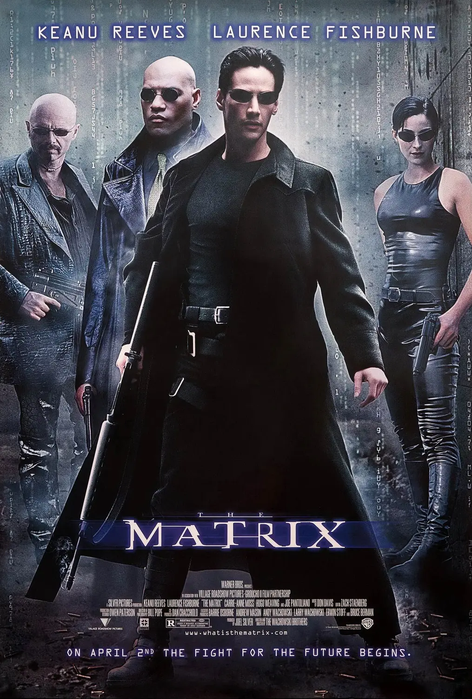
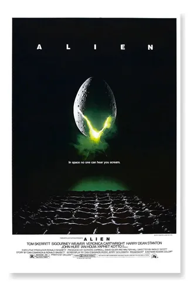

Filmes
- Matrix

- 21 de maio de 1999 No cinema
| 2h 15min |
Ação, Ficção Científica
Direção: Lana Wachowski, Lilly Wachowski
Roteiro: Lilly Wachowski, Lana Wachowski
Elenco: Keanu Reeves, Laurence Fishburne, Carrie-Anne Moss
Título original The Matrix
- Seven- Os Sete Crimes Capitais
- 15 de dezembro de 1995 No cinema
| 2h 10min |
Drama, Policial, Suspense
Direção: David Fincher
Roteiro: Andrew Kevin Walker
Elenco: Brad Pitt, Morgan Freeman, Gwyneth Paltrow
Título original Se7en
- Um Sonho de Liberdade
- 25 de janeiro de 1995 No cinema
| 2h 22min |
Drama
Direção: Frank Darabont
Roteiro: Frank Darabont, Stephen King
Elenco: Tim Robbins, Morgan Freeman, Bob Gunton
Título original The Shawshank Redemption
- Gladiador
- 19 de maio de 2000 No cinema
| 2h 35min |
Aventura, Ação, Histórico
Direção: Ridley Scott
Roteiro John Logan, William Nicholson
Elenco: Russell Crowe, Joaquin Phoenix, Connie Nielsen
Título original Gladiator
- Alien, o 8.º Passageiro

- 13 de agosto de 1979 No cinema
| 1h 56min |
Ficção Científica, Terror
Direção: Ridley Scott
Roteiro Dan O'Bannon, Walter Hill
Elenco: Sigourney Weaver, Tom Skerritt, Veronica Cartwright
Título original Alien